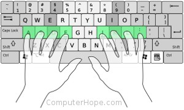

How to type
Most people use a techinque called home row.The home row is most the basic way to type 70+ wpm (words per minute). Alot off people use home row and they can get 100+ wpm(words per minute). You don't have to use home row to get 70+ wpm(words per minute) , I don't use home row and I get 60-70 wpm(words per minute).Before you start you should take a typeing test to compaer before and after.A wedsite that I like useing is called monkey type. When you finsh all the lessons you should revist monkey type and take another typeing test.
Where to put your fingers
Right hand placement
To startfor the right hand put your index finger on the letter j.You will problemly find that there is a little bump, that is there so you know to come back back to that spot.Your middle finger is on the k key and your ring finger is on the l and lastly your pinkey is on the semincolein
Left hand placement
On your left hand your index goes on F, which also has a bump. Next your middle finger goes on D your ring gose on S and lastly pinkey is on A.When all your fingers are in there places they should look like this.
Thing to keep in mind
These are just the first ten fingers, later you will learn letters that are not in the middle row.
How to practic
You problem want to practic these keys. A place you can do that if a wedsite called typeing.com.
Learn to type the G and H key
When you type the H and G key you need to use your index fingers for both of them.So for h you use your right hand.For g you use your left hand.